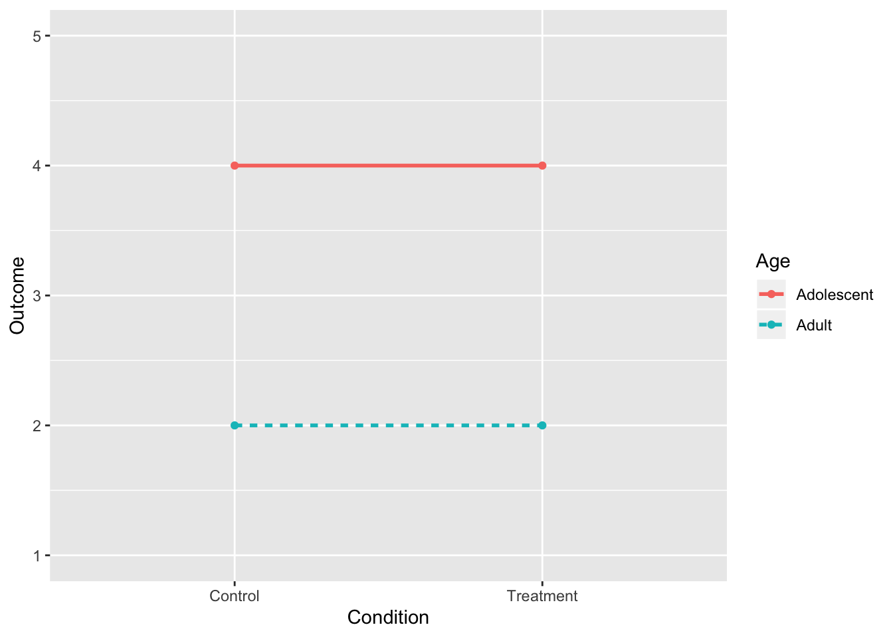
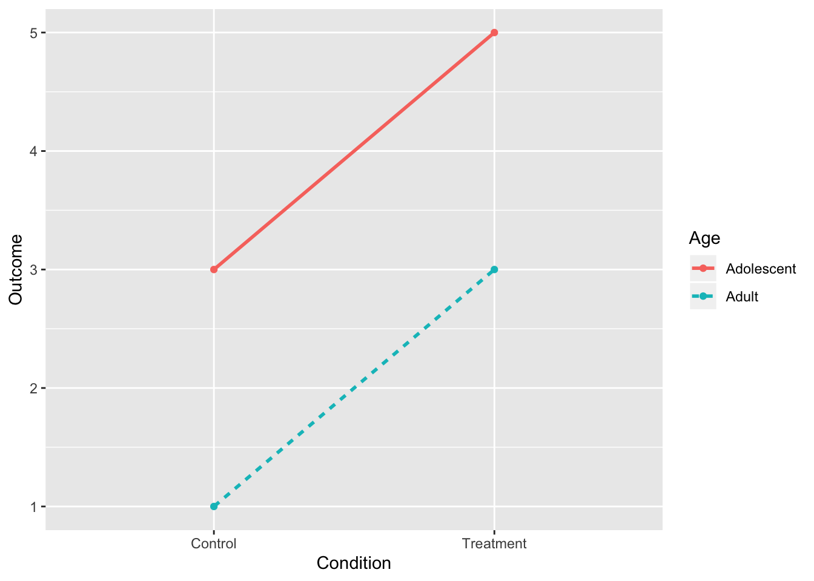
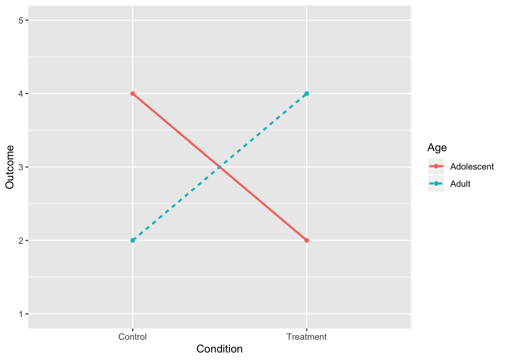
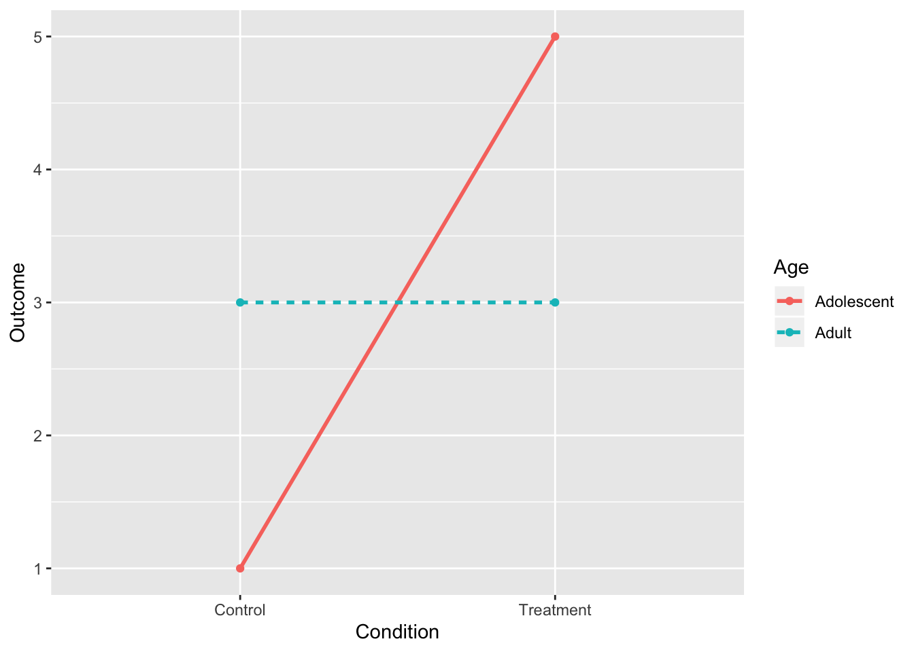
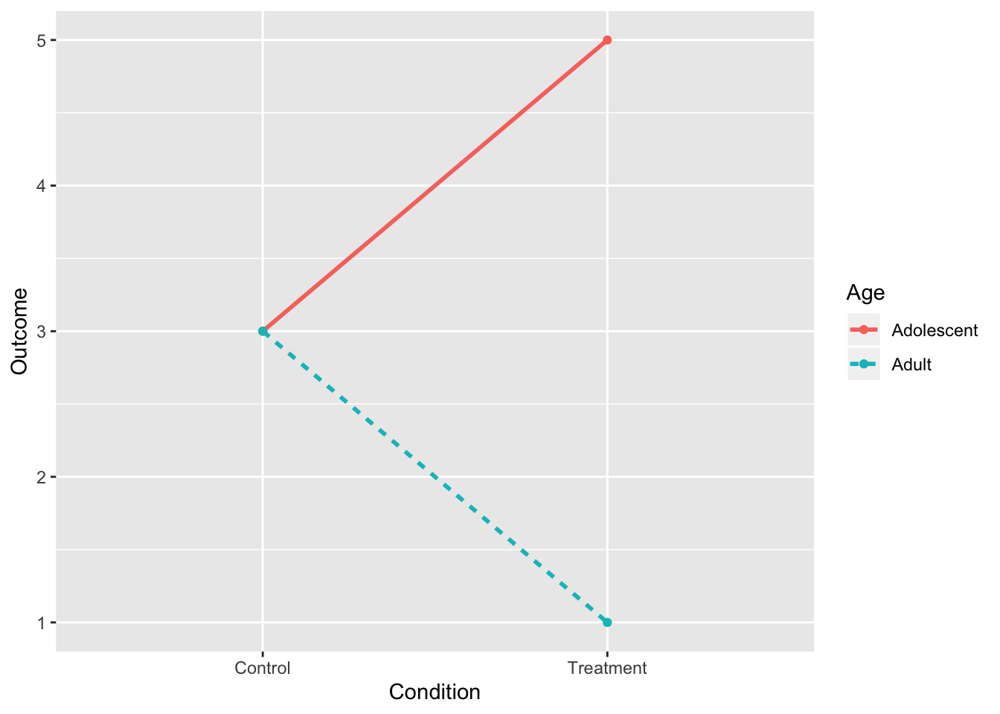
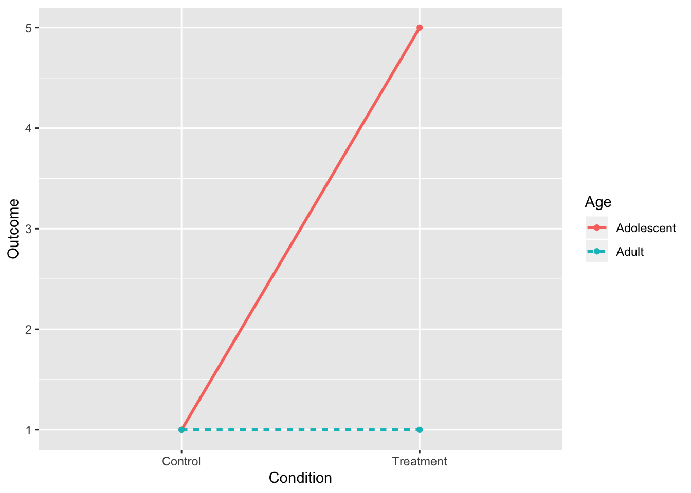
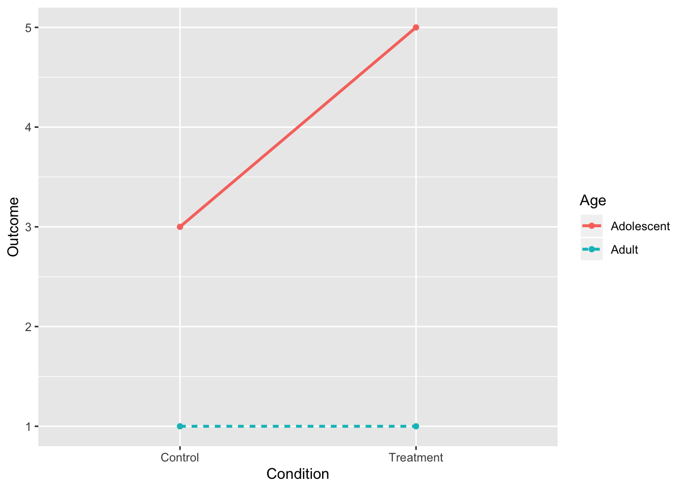
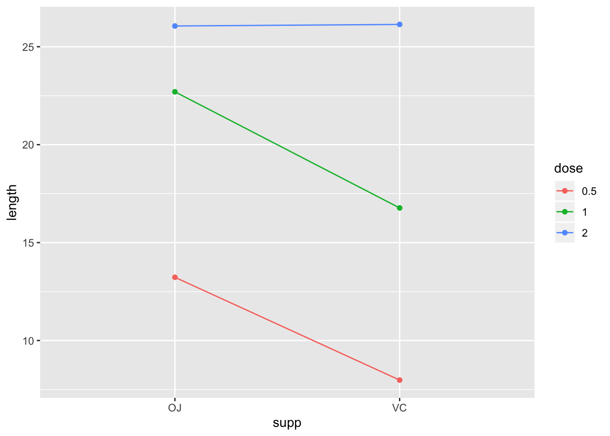
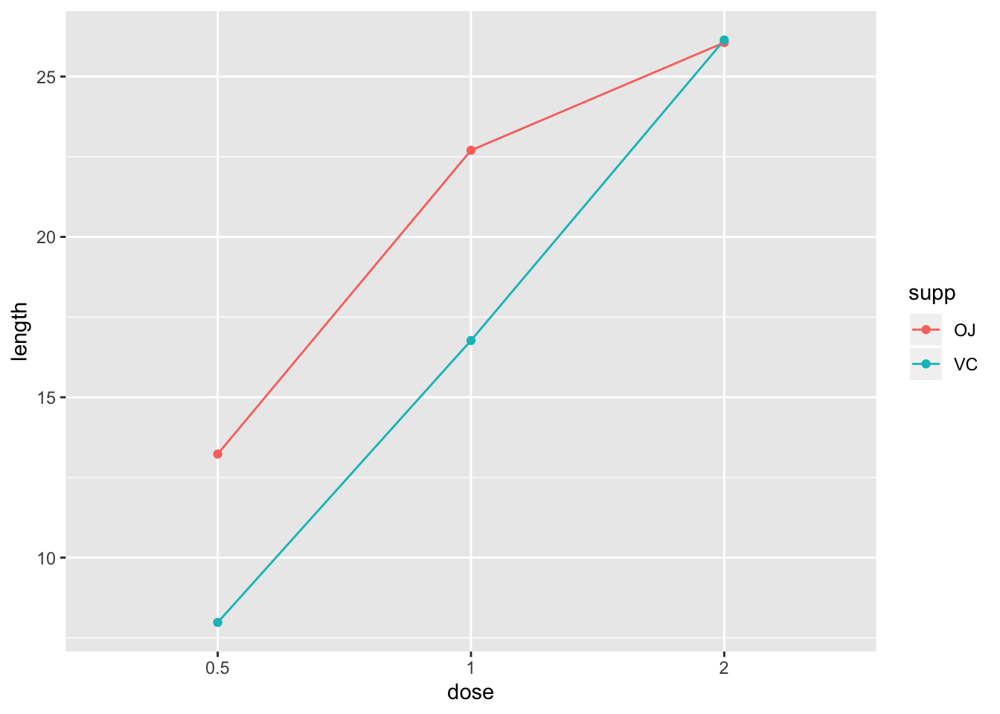
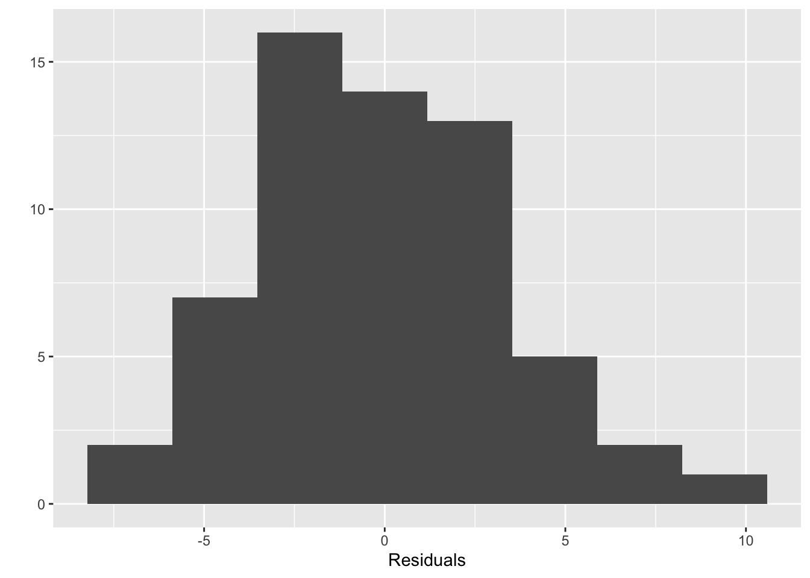

- Two-Way ANOVA
- Example: Effect of Vitamin C on Guinea Pig Tooth Growth
- Two-Way ANOVA: 8 possibilities
- 1. No Interactions, No Main Effects
- 2. No Interaction, Main Effect of Treatment
- 3. No Interaction, Main Effect of Age
- 4. No Interaction, Two Main Effects
- 5. Interaction, No Main Effects
- 6. Interaction and Main Effect of Treatment
- 7. Interaction and Main Effect of Age
- 8. Interaction and Both Main Effects
- 8. Interaction and Both Main Effects (II)
- Guinea Pig Tooth Growth Interaction Plot
- Plot of the cell means (interaction plot)
- Hypotheses
- Assumptions
- Sum of Squares Calculations
- Example: Two-Way ANOVA, no Interaction
- Calculation of Dose \(\times\) Supplement Interaction Effect
- Example: Two-Way ANOVA with Interaction
- Full ANOVA table for Guinea Pig example
- Post Hoc Tests (only do comparisons of interest!)
- \(R^2\) (\(\eta^2\))
- Two-Way ANOVA: 8 possibilities
Hey y’all! Welp, this isn’t really a basic topic, and it will probably be my last “Stats U Need” post, but I did promise a follow-up to our discussion of one-way ANOVA. We will mostly be focused on how to perform this in R, but fear not! We will deal conceptually and computationally about sums of squares calculations, interactions, …all the good stuff!
I also want to take the time to address two annoying issues with more complex ANOVAs: the three types of sums of squares (I/II/III) and setting contrasts for linear models in R.
Two-Way ANOVA
- Simultaneously tests effects of two categorical explanatory variables (“factors”) on a numeric response variable
- Test the effect of Factor A controlling for Factor B (and vice versa)
Test interaction between Factors A and B
- Each factor/interaction has its own set of hypotheses
- Each factor/interaction has its own F-statistic
Each factor/interaction has its own p-value
An interaction tests if the effect of one factor on the response differs across levels of the other factor (this will make sense shortly)
Assumptions
- Random sample, independent observations
- Each group within each factor is roughly normal (or \(n>25\))
- Each group within each factor has equal variance
To assess normality, look at boxplots, histograms, qq-plots for each group
To assess homoskedasticity, use Levene’s test or look at sample variances (\(\forall i,j: s_i^2 < 4s_j^2\)), boxplots
Partitioning the Total Sum of Squares (\(SS_T\))

One-Way ANOVA, two sources of variation: between-groups, within-groups/error
Two-Way ANOVA, four sources: factor A, factor B, A\(\times\)B interaction, within-cell/error
- For a two-way ANOVA, \(SS_T=SS_A+SS_B+SS_{A\times B}+SS_E\)
If you know four of these, you can solve for the other
Two-Way ANOVA Table
| Source | SS | df | MS | F |
|---|---|---|---|---|
| Factor A | \(SS_A\) | \(a-1\) | \(MS_A=\frac{SS_A}{a-1}\) | \(\frac{MS_A}{MS_E}\) |
| Factor B | \(SS_B\) | \(b-1\) | \(MS_B=\frac{SS_B}{b-1}\) | \(\frac{MS_B}{MS_E}\) |
| A\(\times\)B | \(SS_{AB}\) | \((a-1)(b-1)\) | \(MS_{AB}=\frac{SS_{AB}}{(a-1)(b-1)}\) | \(\frac{MS_{A\times B}}{MS_E}\) |
| Error | \(SS_E\) | \(N-ab\) | \(MS_E=\frac{SS_E}{N-ab}\) | |
| Total | \(SS_T\) | \(N-1\) |
Mechanics of Two-Way ANOVA
Below I illustrate the full cross of your two factors (A and B). The big dots used as subscripts for the means indicate the mean of your response variable averaged across the dotted factors.
\[ \begin{array}{c|c|c|c|c|c} & \mathbf{B_1} & \mathbf{B_2} & \dots & \mathbf{B_b} & \\ \hline \mathbf{A_1} & x_{_{1,1,1}},\dots,x_{_{1,1,r}} & x_{_{1,2,1}},\dots,x_{_{1,2,r}} & \dots & x_{_{1,b,1}},\dots,x_{_{1,3,r}} & \bar x_{1 \bullet \bullet} \\ \hline \mathbf{A_2} & x_{_{2,1,1}},\dots,x_{_{2,1,r}} & x_{_{2,2,1}},\dots,x_{_{2,2,r}} & \dots & x_{_{2,b,1}},\dots,x_{_{2,3,r}} & \bar x_{2 \bullet \bullet} \\ \hline \vdots & \vdots & \vdots & \ddots & \vdots & \vdots \\ \hline \mathbf{A_a} & x_{_{a,1,1}},\dots,x_{_{2,1,r}} & x_{_{2,2,1}},\dots,x_{_{2,2,r}} & \dots & x_{_{2,3,1}},\dots,x_{_{2,3,r}} & \bar x_{a \bullet \bullet} \\ \hline & \bar x_{\bullet 1 \bullet} & \bar x_{\bullet 2 \bullet} & \dots & \bar x_{ \bullet b \bullet} & \bar x_{\bullet \bullet \bullet} \\ \end{array} \]
- There are \(a\) levels of factor \(A\) (indexed by \(i\))
- There are \(b\) levels of factor \(B\) (indexed by \(j\))
- Thus, there are \(a \times b\) cells (indexed by \(k\))
- Each cell contains \(r\) observations
Thus, there are a total of \(N=a\times b \times r\) observations!
- Observation \(x_{ijk}\) is the \(k^{th}\) observation in row \(i\) and column \(j\)
- \(\bar x_{\bullet \bullet \bullet}=\) grand mean; \(\bar x_{i \bullet \bullet} =\) row \(i\) mean; \(\bar x_{ \bullet j \bullet} =\) column \(j\) mean
\(\bar x_{ij\bullet}=\) cell \(ij\) mean
Calculating the Sums of Squares by Hand
Below, I give formulas for calculating each of the sum-of-squares for two-way ANOVA, and then below I give a brief verbal description of what the formula is doing in terms of deviations.
- \(\mathbf{SS_A}=r b \sum_i^a (\bar x_{i\bullet \bullet}-\bar x_{\bullet \bullet \bullet})^2\)
Deviations of the means of Factor A from the grand mean
- \(\mathbf{SS_B}=r a \sum_j^b (\bar x_{\bullet j \bullet}-\bar x_{\bullet \bullet \bullet})^2\)
Deviations of the means of Factor B from the grand mean
- \(\mathbf{SS_{A\times B}}= r \sum_i^a \sum_j^b \overbrace{((\bar x_{i j \bullet }-\bar x_{\bullet \bullet \bullet})-(\bar x_{i\bullet \bullet}-\bar x_{\bullet \bullet \bullet})-(\bar x_{\bullet j \bullet}-\bar x_{\bullet \bullet \bullet}))^2}^{(\bar x_{i j \bullet }-\bar x_{i\bullet \bullet}-\bar x_{\bullet j \bullet}+\bar x_{\bullet \bullet \bullet})^2}\)
Deviations of the cell means from the grand mean, minus the effects of factors A and B
- \(\mathbf{SS_W}=\sum_i^a \sum_j^b \sum_k^r (x_{ijk}-\bar x_{ij\bullet})^2\)
Deviations of the observations from their cell means
- \(\mathbf{SS_T}=\sum_i^a \sum_j^b \sum_k^r (x_{ijk}-\bar x_{\bullet \bullet \bullet})^2\)
Deviations of the observations from the grand mean
Cell Means
\[ \begin{array}{c|c|c|c|c|c} & \mathbf{B_1} & \mathbf{B_2} & \dots & \mathbf{B_b} & \\ \hline \mathbf{A_1} & \bar x_{1,1 \bullet} & \bar x_{1,2 \bullet} & \dots & \bar x_{1,b \bullet} & \bar x_{1 \bullet \bullet} \\ \hline \mathbf{A_2} & \bar x_{2,1 \bullet} & \bar x_{2,2 \bullet} & \dots & \bar x_{2,b \bullet} & \bar x_{2 \bullet \bullet} \\ \hline \vdots & \vdots & \vdots & \ddots & \vdots & \vdots \\ \hline \mathbf{A_a} & \bar x_{a,1 \bullet} & \bar x_{a,2 \bullet} & \dots & \bar x_{a,b \bullet} & \bar x_{a \bullet \bullet} \\ \hline & \bar x_{\bullet 1 \bullet} & \bar x_{\bullet 2 \bullet} & \dots & \bar x_{ \bullet b \bullet} & \bar x_{\bullet \bullet \bullet} \\ \end{array} \]
Example: Effect of Vitamin C on Guinea Pig Tooth Growth
This dataset comes preinstalled with base R. The explanatory variables/factors are dose of vitamin C (three levels: 0.5, 1, or 2 mg/day) and delivery method (supp: orange juice or a vitamin C supplement). The response is a measurement of tooth growth (len, numeric). Let’s look at the data.
gpigs<-ToothGrowth
gpigs$dose<-as.factor(gpigs$dose)
table(gpigs$supp,gpigs$dose)##
## 0.5 1 2
## OJ 10 10 10
## VC 10 10 10It’s a full-factorial design with ten guineas in each cross. Let’s grab the means to make a table like the one above
library(dplyr)
library(tidyr)
gpigs%>%group_by(supp,dose)%>%summarize(cellmean=mean(len))%>%spread(supp,cellmean)%>%
rowwise()%>%mutate(mean=mean(c(OJ,VC)))%>%ungroup()%>%
bind_rows(summarize_all(.,.funs=mean))## # A tibble: 4 x 4
## dose OJ VC mean
## <fct> <dbl> <dbl> <dbl>
## 1 0.5 13.2 7.98 10.6
## 2 1 22.7 16.8 19.7
## 3 2 26.1 26.1 26.1
## 4 <NA> 20.7 17.0 18.8Two-Way ANOVA: 8 possibilities
- No effects
- Main effect of A
- Main effect of B
- Main effect of A and B
- A\(\times\)B Interaction, No main effects
- A\(\times\)B Interaction, Main effect of A
- A\(\times\)B Interaction, Main effect of B
- A\(\times\)B Interaction, Main effects of A and B
What follows is an interaction tutorial: I go through each of these scenarios in turn.
1. No Interactions, No Main Effects
- Notice that each dot corresponds to a cell mean
- No differences in cell means or group means (they are overlapping)
library(ggplot2)
intdat<-data.frame(Condition=c("Treatment","Treatment","Control","Control"), Age=c("Adolescent","Adult","Adolescent","Adult"),Outcome=c(3,3,3,3))
intdat$Condition<-as.character(intdat$Condition)
wide<-spread(data=intdat, Age, Outcome)
tab1<-cbind(wide," "=rowMeans(wide[,-1]))
rbind(tab1,c("",colMeans(tab1[,-1])))%>%format_cells(3,2:3, "bold")%>%format_cells(1:2,4, "bold")%>%format_cells(3,4, "bold") %>%knitr::kable(.,align = 'lccc')| Condition | Adolescent | Adult | |
|---|---|---|---|
| Control | 3 | 3 | 3 |
| Treatment | 3 | 3 | 3 |
| 3 | 3 | 3 |
ggplot(intdat,aes(x=Condition,y=Outcome,color=Age,lty=Age))+
geom_line(aes(group=Age),size=1)+
geom_point()+scale_y_continuous(limits=c(1,5))
2. No Interaction, Main Effect of Treatment
intdat<-data.frame(Condition=c("Treatment","Treatment","Control","Control"), Age=c("Adolescent","Adult","Adolescent","Adult"),Outcome=c(4,4,2,2))
intdat$Condition<-as.character(intdat$Condition)
wide<-spread(data=intdat, Age, Outcome)
tab1<-cbind(wide," "=rowMeans(wide[,-1]))
rbind(tab1,c("",colMeans(tab1[,-1])))%>%format_cells(3,2:3, "bold")%>%format_cells(1:2,4, "bold")%>%format_cells(3,4, "bold") %>%knitr::kable(.,align = 'lccc')| Condition | Adolescent | Adult | |
|---|---|---|---|
| Control | 2 | 2 | 2 |
| Treatment | 4 | 4 | 4 |
| 3 | 3 | 3 |
ggplot(intdat,aes(x=Condition,y=Outcome,color=Age,lty=Age))+
geom_line(aes(group=Age),size=1)+
geom_point()+scale_y_continuous(limits=c(1,5))
3. No Interaction, Main Effect of Age
intdat<-data.frame(Condition=c("Treatment","Treatment","Control","Control"), Age=c("Adolescent","Adult","Adolescent","Adult"),Outcome=c(4,2,4,2))
intdat$Condition<-as.character(intdat$Condition)
wide<-spread(data=intdat, Age, Outcome)
tab1<-cbind(wide," "=rowMeans(wide[,-1]))
rbind(tab1,c("",colMeans(tab1[,-1])))%>%format_cells(3,2:3, "bold")%>%format_cells(1:2,4, "bold")%>%format_cells(3,4, "bold") %>%knitr::kable(.,align = 'lccc')| Condition | Adolescent | Adult | |
|---|---|---|---|
| Control | 4 | 2 | 3 |
| Treatment | 4 | 2 | 3 |
| 4 | 2 | 3 |
ggplot(intdat,aes(x=Condition,y=Outcome,color=Age,lty=Age))+
geom_line(aes(group=Age),size=1)+
geom_point()+scale_y_continuous(limits=c(1,5))
- Notice that each dot corresponds to a cell mean!
4. No Interaction, Two Main Effects
intdat<-data.frame(Condition=c("Treatment","Treatment","Control","Control"), Age=c("Adolescent","Adult","Adolescent","Adult"),Outcome=c(5,3,3,1))
intdat$Condition<-as.character(intdat$Condition)
wide<-spread(data=intdat, Age, Outcome)
tab1<-cbind(wide," "=rowMeans(wide[,-1]))
rbind(tab1,c("",colMeans(tab1[,-1])))%>%format_cells(3,2:3, "bold")%>%format_cells(1:2,4, "bold")%>%format_cells(3,4, "bold") %>%knitr::kable(.,align = 'lccc')| Condition | Adolescent | Adult | |
|---|---|---|---|
| Control | 3 | 1 | 2 |
| Treatment | 5 | 3 | 4 |
| 4 | 2 | 3 |
ggplot(intdat,aes(x=Condition,y=Outcome,color=Age,lty=Age))+
geom_line(aes(group=Age),size=1)+
geom_point()+scale_y_continuous(limits=c(1,5))
5. Interaction, No Main Effects
intdat<-data.frame(Condition=c("Treatment","Treatment","Control","Control"), Age=c("Adolescent","Adult","Adolescent","Adult"),Outcome=c(2,4,4,2))
intdat$Condition<-as.character(intdat$Condition)
wide<-spread(data=intdat, Age, Outcome)
tab1<-cbind(wide," "=rowMeans(wide[,-1]))
rbind(tab1,c("",colMeans(tab1[,-1])))%>%format_cells(3,2:3, "bold")%>%format_cells(1:2,4, "bold")%>%format_cells(3,4, "bold") %>%knitr::kable(.,align = 'lccc')| Condition | Adolescent | Adult | |
|---|---|---|---|
| Control | 4 | 2 | 3 |
| Treatment | 2 | 4 | 3 |
| 3 | 3 | 3 |
ggplot(intdat,aes(x=Condition,y=Outcome,color=Age,lty=Age))+
geom_line(aes(group=Age),size=1)+
geom_point()+scale_y_continuous(limits=c(1,5))
6. Interaction and Main Effect of Treatment
intdat<-data.frame(Condition=c("Treatment","Treatment","Control","Control"), Age=c("Adolescent","Adult","Adolescent","Adult"),Outcome=c(5,3,1,3))
intdat$Condition<-as.character(intdat$Condition)
wide<-spread(data=intdat, Age, Outcome)
tab1<-cbind(wide," "=rowMeans(wide[,-1]))
rbind(tab1,c("",colMeans(tab1[,-1])))%>%format_cells(3,2:3, "bold")%>%format_cells(1:2,4, "bold")%>%format_cells(3,4, "bold") %>%knitr::kable(.,align = 'lccc')| Condition | Adolescent | Adult | |
|---|---|---|---|
| Control | 1 | 3 | 2 |
| Treatment | 5 | 3 | 4 |
| 3 | 3 | 3 |
ggplot(intdat,aes(x=Condition,y=Outcome,color=Age,lty=Age))+
geom_line(aes(group=Age),size=1)+
geom_point()+scale_y_continuous(limits=c(1,5))
7. Interaction and Main Effect of Age
- Interaction is what’s important, not main effect.
intdat<-data.frame(Condition=c("Treatment","Treatment","Control","Control"), Age=c("Adolescent","Adult","Adolescent","Adult"),Outcome=c(5,1,3,3))
intdat$Condition<-as.character(intdat$Condition)
wide<-spread(data=intdat, Age, Outcome)
tab1<-cbind(wide," "=rowMeans(wide[,-1]))
rbind(tab1,c("",colMeans(tab1[,-1])))%>%format_cells(3,2:3, "bold")%>%format_cells(1:2,4, "bold")%>%format_cells(3,4, "bold") %>%knitr::kable(.,align = 'lccc')| Condition | Adolescent | Adult | |
|---|---|---|---|
| Control | 3 | 3 | 3 |
| Treatment | 5 | 1 | 3 |
| 4 | 2 | 3 |
ggplot(intdat,aes(x=Condition,y=Outcome,color=Age,lty=Age))+
geom_line(aes(group=Age),size=1)+
geom_point()+scale_y_continuous(limits=c(1,5))
8. Interaction and Both Main Effects
- The interaction is what’s important, not main effect.
intdat<-data.frame(Condition=c("Treatment","Treatment","Control","Control"), Age=c("Adolescent","Adult","Adolescent","Adult"),Outcome=c(5,1,1,1))
intdat$Condition<-as.character(intdat$Condition)
wide<-spread(data=intdat, Age, Outcome)
tab1<-cbind(wide," "=rowMeans(wide[,-1]))
rbind(tab1,c("",colMeans(tab1[,-1])))%>%format_cells(3,2:3, "bold")%>%format_cells(1:2,4, "bold")%>%format_cells(3,4, "bold") %>%knitr::kable(.,align = 'lccc')| Condition | Adolescent | Adult | |
|---|---|---|---|
| Control | 1 | 1 | 1 |
| Treatment | 5 | 1 | 3 |
| 3 | 1 | 2 |
ggplot(intdat,aes(x=Condition,y=Outcome,color=Age,lty=Age))+
geom_line(aes(group=Age),size=1)+
geom_point()+scale_y_continuous(limits=c(1,5))
8. Interaction and Both Main Effects (II)
- Main effect of age holds for both conditions, so it is interpretable
intdat<-data.frame(Condition=c("Treatment","Treatment","Control","Control"), Age=c("Adolescent","Adult","Adolescent","Adult"),Outcome=c(5,1,3,1))
intdat$Condition<-as.character(intdat$Condition)
wide<-spread(data=intdat, Age, Outcome)
tab1<-cbind(wide," "=rowMeans(wide[,-1]))
rbind(tab1,c("",colMeans(tab1[,-1])))%>%format_cells(3,2:3, "bold")%>%format_cells(1:2,4, "bold")%>%format_cells(3,4, "bold") %>%knitr::kable(.,align = 'lccc')| Condition | Adolescent | Adult | |
|---|---|---|---|
| Control | 3 | 1 | 2 |
| Treatment | 5 | 1 | 3 |
| 4 | 1 | 2.5 |
ggplot(intdat,aes(x=Condition,y=Outcome,color=Age,lty=Age))+
geom_line(aes(group=Age),size=1)+
geom_point()+scale_y_continuous(limits=c(1,5))
Guinea Pig Tooth Growth Interaction Plot
gpigs %>% group_by(supp,dose) %>%summarize(length = mean(len))%>%
ggplot() + aes(x = supp, y = length, color = dose) + geom_line(aes(group = dose)) + geom_point()
Plot of the cell means (interaction plot)
Or plot them like this:
gpigs %>% group_by(supp,dose) %>%summarize(length = mean(len))%>%
ggplot() + aes(x = dose, y = length, color = supp) + geom_line(aes(group = supp)) + geom_point()
Hypotheses
\(H_0:\) No effect of supplement type: \(\mu_{OJ}=\mu_{VC}\) \(H_A:\) Effect of dose: at least group mean one differs
\(H_0:\) No effect of dose: \(\mu_{0.5mg}=\mu_{1mg}=\mu_{2mg}\) \(H_A:\) Effect of dose: at least group mean one differs
\(H_0:\) No \(dose \times supplement\) interaction effect \(H_A:\) There is a significant interaction
Assumptions
library(car)
fit<-lm(len ~ dose * supp, data=gpigs)
leveneTest(fit)## Levene's Test for Homogeneity of Variance (center = median)
## Df F value Pr(>F)
## group 5 1.7086 0.1484
## 54#normality looks OK
qplot(fit$residuals,bins=8)+xlab("Residuals") 
shapiro.test(fit$residuals)##
## Shapiro-Wilk normality test
##
## data: fit$residuals
## W = 0.98499, p-value = 0.6694Sum of Squares Calculations
Sums of Squares for Supplement Type (OJ vs VC)
\[ \begin{aligned} SS_{supp}&=rb\sum_i^{2}(\bar x_{i\bullet\bullet}-\bar x_{\bullet\bullet\bullet})^2\\ &=10*3*\sum_i^{2}(\bar x_{i\bullet\bullet}-18.813)^2\\ &=10*3*\left((20.663-18.813)^2+(16.963-18.813)^2\right)\\ &=205.35 \end{aligned} \]
- Overall effect of supplement type:
fit<-lm(len ~ supp, data=gpigs)
Anova(fit)## Anova Table (Type II tests)
##
## Response: len
## Sum Sq Df F value Pr(>F)
## supp 205.4 1 3.6683 0.06039 .
## Residuals 3246.9 58
## ---
## Signif. codes: 0 '***' 0.001 '**' 0.01 '*' 0.05 '.' 0.1 ' ' 1Sums of Squares for Dose (0.5, 1, or 2)
\[ \begin{aligned} SS_{dose}&=ra\sum_j^{3}(\bar x_{\bullet j \bullet}-\bar x_{\bullet\bullet\bullet})^2\\ &=10\times 2\times \sum_j^{3}(\bar x_{\bullet j\bullet}-18.813)^2\\ &=20\times\left((10.605-18.813)^2+(19.735-18.813)^2+(26.1-18.813)^2\right)\\ &=2426.434 \end{aligned} \]
- Overall effect of dose:
fit<-lm(len ~ dose, data=gpigs)
Anova(fit)## Anova Table (Type II tests)
##
## Response: len
## Sum Sq Df F value Pr(>F)
## dose 2426.4 2 67.416 9.533e-16 ***
## Residuals 1025.8 57
## ---
## Signif. codes: 0 '***' 0.001 '**' 0.01 '*' 0.05 '.' 0.1 ' ' 1Example: Two-Way ANOVA, no Interaction
- Effect of supplement type, controlling for dose (it’s significant now!)
- Effect of dose, controlling for supplement type
fit<-lm(len ~ supp + dose, data=gpigs)
Anova(fit)## Anova Table (Type II tests)
##
## Response: len
## Sum Sq Df F value Pr(>F)
## supp 205.35 1 14.017 0.0004293 ***
## dose 2426.43 2 82.811 < 2.2e-16 ***
## Residuals 820.43 56
## ---
## Signif. codes: 0 '***' 0.001 '**' 0.01 '*' 0.05 '.' 0.1 ' ' 1Calculation of Dose \(\times\) Supplement Interaction Effect
Shortcut:
- \(SS_{cells}=r\sum_i^a\sum_j^b(\bar x_{ij\bullet}-\bar x_{\bullet\bullet\bullet})^2\) (deviations of cell means around grand mean)
- \(SS_{A\times B}=SS_{cells}-SS_{A}-SS_{B}\)
\[ \begin{aligned} SS_{cells}&=10\sum_i^2\sum_j^3(\bar x_{ij\bullet}-18.813)^2\\ &=10 \times ((13.23-18.813)^2+(22.7-18.813)^2+(26.06-18.813)^2+ \\ & \ \ \ \ \ \ ...(7.98-18.813)^2+(16.77-18.813)^2+(26.14-18.813)^2)\\ &=10\times (31.170+15.109+52.519+4.174+53.685)\\ &=2740.103 \end{aligned} \]
- \(SS_{supp \times dose}=SS_{cells}-SS_{supp}-SS_{dose}\)
- \(SS_{supp \times dose}=2740.103-205.35-2426.434=\mathbf{108.32}\)
Example: Two-Way ANOVA with Interaction
- Effect of \(supplement\), controlling for dose
- Effect of \(dose\), controlling for supplement
- Effect of \(dose\times supp\)
fit<-lm(len ~ supp + dose + supp:dose, data=gpigs)
Anova(fit)## Anova Table (Type II tests)
##
## Response: len
## Sum Sq Df F value Pr(>F)
## supp 205.35 1 15.572 0.0002312 ***
## dose 2426.43 2 92.000 < 2.2e-16 ***
## supp:dose 108.32 2 4.107 0.0218603 *
## Residuals 712.11 54
## ---
## Signif. codes: 0 '***' 0.001 '**' 0.01 '*' 0.05 '.' 0.1 ' ' 1#Here's a quick way to get all means
model.tables(aov(fit), type = "means")## Tables of means
## Grand mean
##
## 18.81333
##
## supp
## supp
## OJ VC
## 20.663 16.963
##
## dose
## dose
## 0.5 1 2
## 10.605 19.735 26.100
##
## supp:dose
## dose
## supp 0.5 1 2
## OJ 13.23 22.70 26.06
## VC 7.98 16.77 26.14Full ANOVA table for Guinea Pig example
| Source | SS | df | MS | F |
|---|---|---|---|---|
| dose | 2426.43 | 2 | \(\frac{2426.43}{2}=1213.215\) | \(\frac{1213.215}{13.18}=92.05\) |
| supp | 205.35 | 1 | \(\frac{205.35}{1}=205.35\) | \(\frac{205.35}{13.18}=15.58\) |
| dose\(\times\)supp | 108.32 | 2 | \(\frac{108.32}{2}=54.16\) | \(\frac{54.16}{13.18}=4.11\) |
| error | 712.11 | 54 | \(\frac{712.11}{54}=13.18\) | |
| total | 3452.21 | 59 |
- Critical value for main effect of dose: \(F^*_{(2,54)}= 3.16\overbrace{\approx 3.18}^{table\ F_{(2,50)}}\)
- Critical value for main effect of supplement: \(F^*_{(1,54)}= 4.02\overbrace{\approx 4.03}^{table\ F_{(1,50)}}\)
- Critical value for interaction effect: \(F^*_{(2,54)}= 3.16\overbrace{\approx 3.18}^{table\ F_{(2,50)}}\)
- Decisions?
Post Hoc Tests (only do comparisons of interest!)
TukeyHSD(aov(fit))## Tukey multiple comparisons of means
## 95% family-wise confidence level
##
## Fit: aov(formula = fit)
##
## $supp
## diff lwr upr p adj
## VC-OJ -3.7 -5.579828 -1.820172 0.0002312
##
## $dose
## diff lwr upr p adj
## 1-0.5 9.130 6.362488 11.897512 0.0e+00
## 2-0.5 15.495 12.727488 18.262512 0.0e+00
## 2-1 6.365 3.597488 9.132512 2.7e-06
##
## $`supp:dose`
## diff lwr upr p adj
## VC:0.5-OJ:0.5 -5.25 -10.048124 -0.4518762 0.0242521
## OJ:1-OJ:0.5 9.47 4.671876 14.2681238 0.0000046
## VC:1-OJ:0.5 3.54 -1.258124 8.3381238 0.2640208
## OJ:2-OJ:0.5 12.83 8.031876 17.6281238 0.0000000
## VC:2-OJ:0.5 12.91 8.111876 17.7081238 0.0000000
## OJ:1-VC:0.5 14.72 9.921876 19.5181238 0.0000000
## VC:1-VC:0.5 8.79 3.991876 13.5881238 0.0000210
## OJ:2-VC:0.5 18.08 13.281876 22.8781238 0.0000000
## VC:2-VC:0.5 18.16 13.361876 22.9581238 0.0000000
## VC:1-OJ:1 -5.93 -10.728124 -1.1318762 0.0073930
## OJ:2-OJ:1 3.36 -1.438124 8.1581238 0.3187361
## VC:2-OJ:1 3.44 -1.358124 8.2381238 0.2936430
## OJ:2-VC:1 9.29 4.491876 14.0881238 0.0000069
## VC:2-VC:1 9.37 4.571876 14.1681238 0.0000058
## VC:2-OJ:2 0.08 -4.718124 4.8781238 1.0000000\(R^2\) (\(\eta^2\))
\[ \begin{aligned} R^2&=1-\frac{SS_E}{SS_T}\\ &=1-\frac{712.11}{205.35+2426.43+108.32+712.11}\\ &=1-\frac{712.11}{3452.21}\\ &=.794 \end{aligned} \]
summary(fit)$r.sq## [1] 0.7937246summary(fit)$adj.r.sq## [1] 0.774625